We describe a method for human pose estimation in static images based on a novel representation of part models. Notably, we do not use articulated limb parts, but rather capture orientation with a mixture of templates for each part. We describe a general, flexible mixture model for capturing contextual co-occurrence relations between parts, augmenting standard spring models that encode spatial relations. We show that such relations can capture notions of local rigidity. When co-occurrence and spatial relations are tree-structured, our model can be efficiently optimized with dynamic programming. We present experimental results on standard benchmarks for pose estimation that indicate our approach is the state-of-the-art system for pose estimation, outperforming past work while being orders of magnitude faster.
Yi Yang, Deva Ramanan. Articulated Pose Estimation with Flexible Mixtures of Parts. IEEE Conference on Computer Vision and Pattern Recognition (CVPR), Colorado Spring, USA, 2011.
Paper • Slides • Poster • Video Talk • News
Yi Yang, Deva Ramanan. Articulated Human Detection with Flexible Mixtures of Parts. IEEE Transactions on Pattern Analysis and Machine Intelligence (PAMI), 2013.
Please check the latest copy of the code.
We are also grateful for other implementation sources.
| 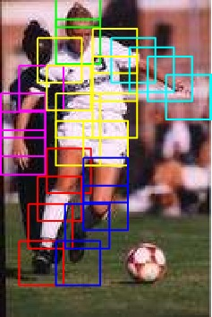 | 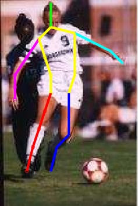 | 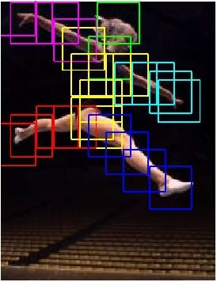 | 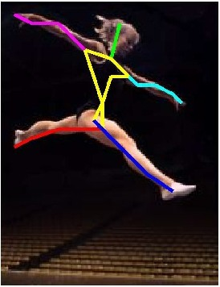 | 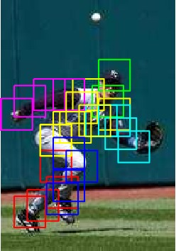 | 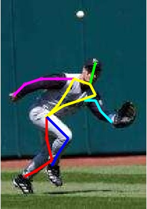 |
| 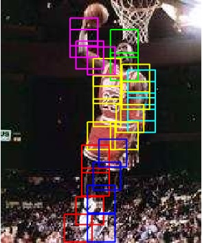 | 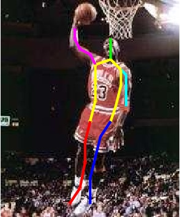 | 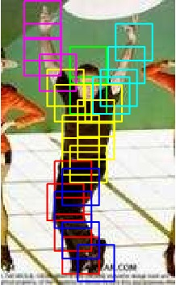 | 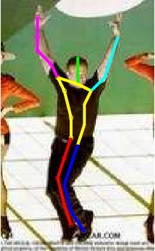 | 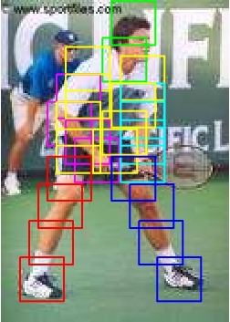 | 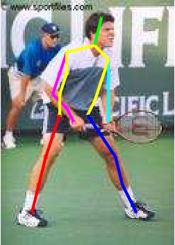 |
| 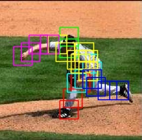 | 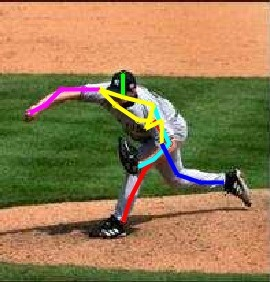 | 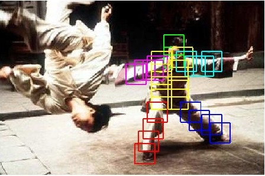 | 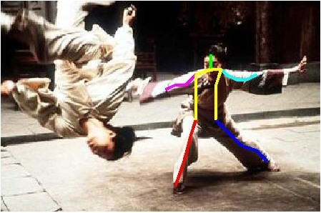 |